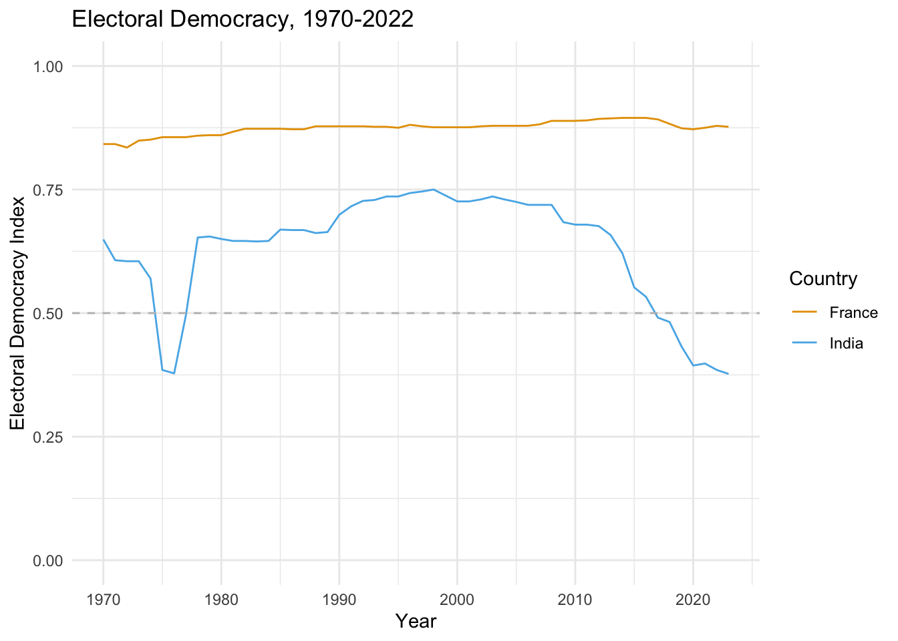

# Store the value 42 in the object my_number
my_number <- 42
# Print the value of my_number
my_number [1] 42R and More Quarto
<-<-, and the data or value you wish to assign to the object is on the right# Store the value 42 in the object my_number
my_number <- 42
# Print the value of my_number
my_number [1] 42# Addi a number and store it to a value
sum_of_2plus2 <- 2 + 2
sum_of_2plus2[1] 4# Add two numbers without storing them in an object
2 + 2[1] 4+ addition- subtraction* multiplication/ division^ exponentiation (also **)mean() function to calculate the average of a set of numbersc() to create a vector of numbersCreate a vector of numbers and take the mean…
# Create a vector of numbers
numbers <- c(1, 2, 3, 4, 5)
# Calculate the mean of the numbers
mean(numbers)[1] 3mean() calculates the mean of a set of numbersmedian() calculates the median of a set of numberssd() calculates the standard deviation of a set of numberssum() calculates the sum of a set of numberslength() calculates the length of a vectormax() and min() calculate the maximum and minimum values of a vectorround() rounds a number to a specified number of decimal placessqrt() calculates the square root of a numberlog() calculates the natural logarithm of a numberexp() calculates the exponential of a numberabs() calculates the absolute value of a number03:00
Let’s open up the Getting Started module on Posit Cloud…
And work through the examples there.
library(leaflet)
leaflet() |>
addTiles() |> # Add default OpenStreetMap map tiles
addMarkers(lat = 38.90243843683386, lng = -77.0443814477152,
label = "Elliott School of International Affairs")03:00

# Load the packages
library(vdemlite)
library(ggplot2)
# Use vdemlite to extract democracy scores for France and INdia
dem_data <- fetchdem(indicators = "v2x_polyarchy",
countries = c("FRA", "IND"))
# And now we can plot the data
ggplot(dem_data, aes(y = v2x_polyarchy, x = year, color=country_name)) +
geom_line() +
theme_minimal() +
xlab("Year") +
ylab("Electoral Democracy Index") +
ggtitle("Electoral Democracy, 1970-2022") +
geom_hline(yintercept = .5, linetype = "dashed", color = "grey") +
scale_color_manual(name="Country", values=c("#E69F00", "#56B4E9")) +
ylim(0, 1)03:00

library(tidyverse)
library(unvotes)
library(lubridate)
library(scales)
library(pacman)
unvotes <- un_votes %>%
inner_join(un_roll_calls, by = "rcid") %>%
inner_join(un_roll_call_issues, by = "rcid")
unvotes %>%
# then filter out to only include the countries we want
filter(country %in% c("South Africa", "United States", "France")) %>%
# then make sure R understands the the year variable is a data
mutate(year = year(date)) %>%
# Then group the data by country and year
group_by(country, year, issue) %>%
# then take the average Yes votes for each country_year
summarize(percent_yes = mean(vote == "yes")) %>%
# then make a nice plot
ggplot(mapping = aes(x = year, y = percent_yes, color = country)) +
geom_point(alpha = 0.4) +
geom_smooth(method = "loess", se = FALSE) +
facet_wrap(~issue) +
scale_y_continuous(labels = percent) +
scale_color_manual( values=c("#E69F00", "#56B4E9", "#009E73")) +
labs(
title = "Percentage of 'Yes' votes in the UN General Assembly",
subtitle = "1946 to 2019",
y = "% Yes",
x = "Year",
color = "Country"
)03:00
title, subtitle, date, abstract, toc, etc.^[] or [^1] syntax to add a footnote^[This is a footnote]quarto publish quarto-pub name-of-document.qmd in the terminaltitle:subtitle:date:date-format:theme:toc:lorem package